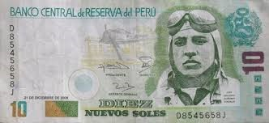

Czym może cię Peru zaskoczyć?
1. Średnia długość życia w tym kraju to 73,2 lata (kobiety – 75,9 lat i mężczyźni – 70,6 lat)
2. Średni wiek osób zamieszkujących ten kraj to 27.3 lat.
3. Statystyczny mieszkaniec Limy spędza w korkach 5 lat swojego życia
4. Znajduje się tam jeden z siedmiu cudów świata – Machu Picchu
JEDZENIE
5. W Peru uprawiane są wszystkie rodzaje kukurydzy, które istnieją.
6. Ziemniaki pochodzą z Peru, a z tego powstało wyrażenie „Soy mas Peruano que la papa” tłumaczy się jako „Jestem bardziej peruwiańska niż ziemniak”. Tutaj możesz znaleźć do 3500 odmian tej rośliny.
7. W kraju tym odkryto ślady najstarszego popcornu na świecie z 4700 roku p.n.e.
8. Peru znajduje się w ścisłej pierwszej dziesiątce największych producentów kawy na świecie.
9. Dopuszczalne jest jedzenie kota, więc jeśli tu przyjedziesz, bądź ostrożny zamawiając mięso i frytki.
10. Spożywa się tam również świnki morskie.
11. Inca Kola to neonowy żółty napój, sprzedawany w każdym zakątku Limy i reszty Peru, jest najpopularniejszym napojem w kraju. W większości innych to Coca Cola.
12. Dorosła osoba pali średnio 11 papierosów miesięcznie.
13. Alkohol można spożywać od 18 roku życia.
GEOGRAFIA & BIOLOGIA
14. Występuje tam aż 28 różnych stref klimatycznych.
15. Ma tam źródło najdłuższa rzeka świata – Amazonka.
16. Najwyższy szczyt w Peru to Huascaran. Znajduje się w regionie Huaraz i jest dość wysoki, sięga bowiem 6.768 m n.p.m.
17. Amazońskie lasy deszczowe pokrywają 60% Peru.
18. Natomiast grunty rolne zajmują ok. 17% kraju.
19. Cotahuasi to kanion w regionie Arequipa. Jest dwa razy głębszy od Wielkiego Kanionu w Arizonie w USA. Szacuje się, że jego głębokość wynosi 3535 metrów.
20. Najniższa temperatura wynosiła -25,2 °C. Została zmierzona została w Mazo Cruz.
21. Najwyższa temperatura wynosiła 39,6 °C. Została zmierzona została w Pucallpa.
22. Na szczycie góry Huascarán odnotowano najmniejsze przyśpieszenie ziemskie (9,7639).
23. Jedną z roślin rodzimych dla Peru jest pumia raymondi. To jest kwiat, który kwitnie tylko co 100 lat.
24. Występuje tam system rysunków Nazca. W 1959 odkrył je amerykański naukowiec. Sugeruje się, że to system linii, które kiedyś wspomagało lądowanie latających spodków
EKONOMIA
25. Jest uznawane za jeden z najbogatszych krajów na świecie pod względem samych tylko zasobów naturalnych. Wiele z tych zasobów nie zostało jednak jeszcze w pełni wykorzystanych.
26. Jest szóstym co do wielkości producentem złota na świecie.
27. Eksportuje głównie złoto, mąkę, miedź i ropę naftową. Ich głównym importerem są pojazdy, technologia i rafinowana ropa naftowa.
28. Słynie z produkcji jednych z najlepszych bawełn na świecie, a wiele znanych marek odzieżowych, takich jak Lacoste, produkuje swoje ubrania właśnie w Peru.
29. Walutą Peru jest sol.

KULTURA I TRADYCJE 30. Motto kraju – “Silnie i szczęśliwie dla jedności”.
31. Quechua (tak, tak marka Decathlona) była głównym językiem starożytnej cywilizacji.
32. Główną religią jest Katolicyzm (81%).
33. Najstarsza gazeta w Ameryce Południowej pochodzi z dawnego kraju Inków. Została założona w Limie, w 1825 roku i nazywa się El Peruano.
34. Chan Chan to największe przedkolumbijskie miasto w Ameryce Południowej, ale także największe miasto na świecie zbudowane z cegły adobe [informatycy zrozumieją ;)]
35. Występuje tam unikalny znak drogowy „Uwaga na alpaki!”’
36. Każdego roku w sylwestra rodzina i przyjaciele wręczają sobie prezenty w postaci żółtych majtek.
37. Zgodnie ze starą tradycją, para młodych po ślubie wymienia się sandałami.
38. Inna tradycja nakazuje wspólne mieszkanie z rodzicami przyszłego małżonka przed ślubem i wspieranie ich w codziennych pracach.
EDUKACJA
39. W Peru obowiązkowa nauka trwa 12 lat.
40. Początek edukacji rozpoczyna się w wieku 6 lat.
41. Średni poziom IQ Peruwian wynosi 85.
42. W kraju tym jest 5,5% osób powyżej 15 roku życia, które nie potrafią czytać, ani pisać (około 1 713 340 osób).
INFORMATYKA
43. Krajową domeną najwyższego poziomu jest .pe. Istnieje ponad 68 960 stron internetowych z takim rozszerzeniem. Najpopularniejszymi stronami z rozszerzeniem .pe są: google.com.pe, elcomercio.pe i rpp.com.pe.
Dzisiaj przychodzę tylko z tym. Zaciekawiłem Was? Czy wiedzieliście już wszystko? Byliście kiedyś w Peru? Miłego weekendu